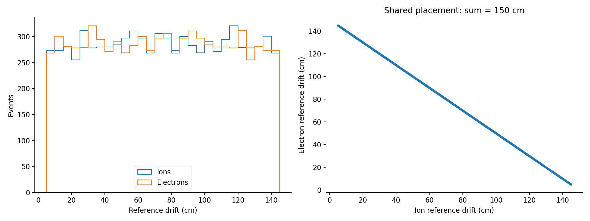
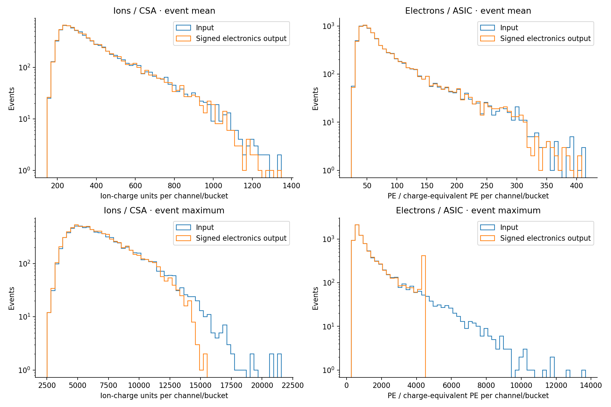
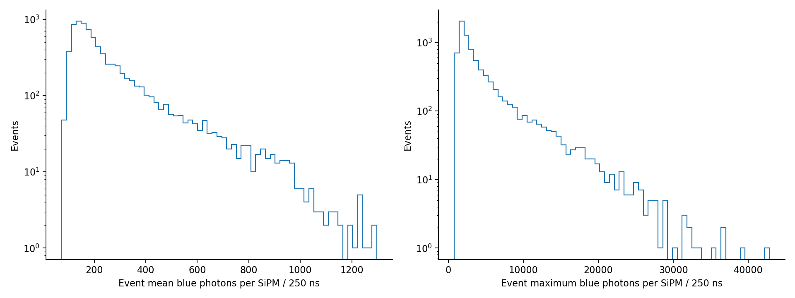
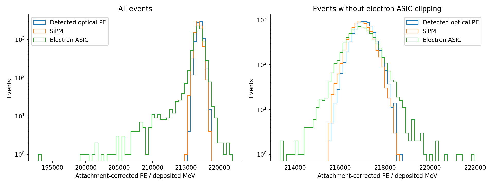
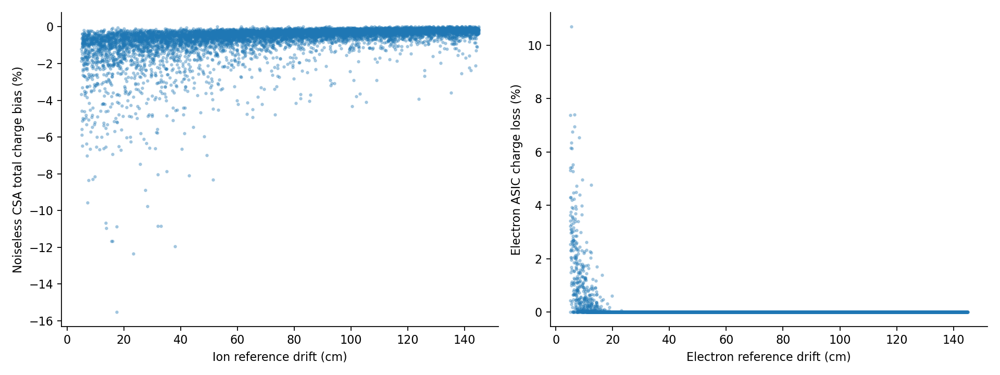

| Quantity | Value |
|---|---|
| Matched events | 8000 |
| Corrected CSA maximum fast-model error (ENC) | 0.43361 |
| CSA maximum solver-refinement error (ENC) | 0.00002 |
| Mean initial pairs/event | 112,163.29 |
| Mean detected optical PE/event | 507,460.27 |
| Ion CSA total noiseless bias (%) | -0.67844 |
| Ion CSA total signed reconstructed bias (%) | -0.69802 |
| Events with a 50% compressed CSA history (%) | 10.175 |
| SiPM optical charge loss (%) | 0.07616 |
| Electron ASIC charge loss (%) | 0.06607 |
| Electron events with clipping (%) | 5.100 |
| Input-positive electron pulses clipped (%) | 0.00379 |
| Electron events retained | 7592 |
| Electron retained fraction (%) | 94.900 |
| Stage | Unit | Mean average | Mean median | Maximum average | Maximum median |
|---|---|---|---|---|---|
| Ion input | ions | 392.723 | 334.626 | 7,014.820 | 6,447.000 |
| Noiseless CSA | ion equivalents | 388.885 | 333.378 | 6,820.894 | 6,356.719 |
| Signed CSA output | ion equivalents | 388.907 | 333.599 | 6,821.760 | 6,353.889 |
| Blue photons at SiPM | photons | 256.335 | 190.896 | 4,434.382 | 2,734.000 |
| PDE optical triggers | PE | 82.028 | 61.093 | 1,425.667 | 884.000 |
| SiPM optical charge | PE equivalents | 81.927 | 61.064 | 1,416.676 | 881.844 |
| Signed electron ASIC | PE equivalents | 81.915 | 61.253 | 1,335.749 | 882.619 |
| Stage | All-event RMS (%) | Retained RMS (%) |
|---|---|---|
| Detected optical PE | 0.19499 | 0.19612 |
| After SiPM | 0.20781 | 0.20174 |
| Noisy, before clipping | 0.29358 | 0.29171 |
| After electron ASIC | 0.56737 | 0.29171 |
| Event ID | Electron drift (cm) | Maximum input PE | SiPM loss (%) | ASIC loss (%) |
|---|---|---|---|---|
| 334 | 5.54 | 13,682 | 0.7052 | 10.6932 |
| 1277 | 6.61 | 9,206 | 0.5396 | 7.3965 |
| 7681 | 5.03 | 11,388 | 0.5445 | 7.3755 |
| 3444 | 6.49 | 11,690 | 0.4765 | 6.9584 |
| 2946 | 5.80 | 12,680 | 0.5795 | 6.7681 |
| 1689 | 8.27 | 10,122 | 0.5516 | 6.5477 |
| 6029 | 5.47 | 10,052 | 0.4992 | 6.3493 |
| 7731 | 5.25 | 11,766 | 0.4758 | 6.1554 |
| 2615 | 5.57 | 10,487 | 0.4876 | 6.1366 |
| 4264 | 6.01 | 8,809 | 0.4699 | 5.5297 |
8,000 bb0nu events share one saved realization. Ion reference drift is uniform over 5–145 cm in a 150 cm chamber; electron reference drift is its exact complement. Primary-pair draws are anchored to the existing reference card, so changing placement does not change the pair realization. Event IDs, primary checksums and both distances are validated across common realization, ion collection, photon collection, corrected CSA, SiPM charge and electron ASIC output. The 4 mm ion pitch and 40 ms frames correspond to 4 mm drift buckets. Electron readout uses a 4 mm hole pitch and 250 ns (0.25 mm) buckets.
Xe–15% He at 15 bar, E/P = 2 kV/cm/bar, 2.5 mm diameter holes/guides and 5 mm EL depth. A 0.5 mm radial xenon gap surrounds each guide. Unit electron collection and absorbing EL walls are assumed. Analytical hole-exit acceptance, TPB conversion 0.65, forward factor 0.5 and meridional capture 1−1/1.5 give total optical probability 0.01187461. Guide propagation and NOA 87 coupling are ideal. Saved photons are blue photons at the SiPM; PDE is applied once afterward.
S14160-3015PS: 3 × 3 mm², 39,984 cells, 21,808 illuminated by the centered 2.5 mm disk, PDE 0.32, gain 360,000 and total dark rate 700 kcps. Illuminated and dark-only cell populations retain independent recovery states. The baseline uses a provisional 12.5 ns recovery constant with 128 statistical substeps per bucket. Electron electronics adds 3.5417 PE RMS and clips at 1 mA (4334.38 PE per bucket). Crosstalk, afterpulsing and gain spread remain deferred.
The ion arm uses the calibrated CSA v3 circuit, 5 ms averaging and the 40 ms response/noise covariance. The linear fast path is validated against transistor controls at 0.5 ENC tolerance; histories below the 0.63 V guard receive direct LTspice treatment, with adaptive controls and solver refinement. The simulator binary and circuit calibration are reused only with matching content hashes. The signed three-frame inverse reconstructs ion charge, including quiet/recovery frames and temporal noise correlations. A 50% compression diagnostic identifies events containing such a pad history; it is separate from electron ASIC clipping.
Pulse tables use all input-positive channel/bucket cells, preserving those same cells through electronics. Each event contributes one mean and maximum. Signed response values remain intact. Ion total charge bias sums complete stored histories relative to collected ions. Electron energy widths are full-distribution RMS/mean after correcting known attachment survival and dividing by deposited MC energy; noisy totals subtract expected dark charge. The retained electron sample rejects an event when any electron ASIC bucket clips.
Detector production: 128.08 s; concurrent SiPM/ASIC: 484.26 s; concurrent CSA pipeline: 1733.83 s; complete paired production and validation: 1877.37 s. Reduction and presentation are separate.





PDF report · Combined manifest · Viewer card.
schema = "nausicaa.electron_detector_spec.v1" pressure_bar = 15.0 helium_fraction = 0.15 drift_speed_mm_us = 1.0 lifetime_ms = 15.0 hole_pitch_mm = 4.0 hole_diameter_mm = 2.5 hole_depth_mm = 5.0 sipm_shape = "square" sipm_side_mm = 3.0 bucket_width_us = 0.25 reduced_field_kV_cm_bar = 2.0 j_variance_ratio = 0.030 j_status = "user_specified" j_reference = "Oliveira Figure 6; corrected approximate user reading, 2026-11-04" optical_model = "elm_blue_meridional" electron_collection_efficiency = 1.0 [optics] photon_band = "blue_tpb" tpb_conversion_efficiency = 0.65 forward_fraction = 0.5 guide_refractive_index = 1.5 gap_refractive_index = 1.0 guide_length_mm = 100.0 gas_gap_radial_mm = 0.5 propagation_transmission = 1.0 coupling_transmission = 1.0 electrode_transmission = 1.0 coupling_adhesive = "Norland NOA 87" guide_length_policy = "fixed_grading_field" grading_field_kV_cm = 4.65 cathode_potential_V = 1200.0 entry_potential_V = 31500.0 exit_potential_V = 46500.0 sensor_plane_potential_V = 0.0 reference = "docs/elm.tex; isotropic axial EL, absorbing walls, meridional isotropic-in-core capture" [pure_xe] d_T_mm_sqrtbar_per_sqrtcm = 3.5 d_L_mm_sqrtbar_per_sqrtcm = 0.9 yield_gain_photons_per_electron_kV = 137.0 yield_threshold_kV_cm_bar = 0.73 [xe_he15] d_T_mm_sqrtbar_per_sqrtcm = 1.6 d_L_mm_sqrtbar_per_sqrtcm = 0.75 yield_gain_photons_per_electron_kV = 139.0 yield_threshold_kV_cm_bar = 0.80 schema = "nausicaa.sipm_spec.v1" response_model = "statistical" statistical_substeps = 128 sparse_trigger_limit = 16 microcell_count = 39984 illuminated_microcell_count = 21808 microcell_pitch_m = 15e-6 recovery_s = 1.25e-08 arrival_model = "uniform_in_bucket" illumination = "uniform_disk_subset" recovery_pde = "constant" initial_state = "stationary_dark" charge_assignment = "avalanche_bucket" input_photon_band = "blue_tpb" shape = "square" side_m = 0.003 pde = 0.32 gain = 360000.0 dark_reference_rate_Hz = 700000.0 dark_reference_area_m2 = 9e-6 crosstalk = false afterpulsing = false gain_spread = false seed = 2026 [acquisition] channels = "illuminated_in_event" additional_channels = [] quiet_before_buckets = 4 quiet_after_buckets = 4 empty_first_bucket = 0 empty_last_bucket = 7 [provenance] device = "Hamamatsu S14160-3015PS, 3x3 mm2; nominal +4 V, 25 C" pde = "0.32 peak PDE at 460 nm used as provisional TPB-spectrum average; packaged PDE includes entrance window" gain = "3.6e5 nominal electrons per primary avalanche; charge per fully recovered avalanche" dark_rate = "S14160-3015PS nominal primary dark rate 700 kcps at 25 C and +4 V" window = "S14160-3015PS silicone resin, nominal n=1.57; unit external coupling used in pilot" datasheet = "papers/SiPM/Hamamatsu_S14160_small_cells.pdf" recovery = "Provisional 12p5 ns exponential recovery; sensitivity parameter, not a measured 3015PS recharge constant" illumination = "Uniform centered 2.5 mm disk on 3x3 mm square: round(39984*pi*1.25^2/9)=21808 lit cells; remaining 18176 dark-only; full 700 kcps dark rate split by cell count" baseline_pe = 0.0 bucket_width_s = 2.5e-7 current_limit_A = 0.001 lower_clipping = false noise = "independent_gaussian_pe" noise_rms_pe = 3.5416666666666665 schema = "nausicaa.sipm_electronics_spec.v1" seed = 2027 transfer = "bucket_average_current" [provenance] noise = "Same input charge RMS as 0.5 PE at gain 2.55e6; rescaled to gain 3.6e5" range = "User design input: upper clipping at 1 mA; supersedes the provisional 300 PE limit" timing = "User 0.25 us buckets; integrated charge divided by bucket duration" schema = "nausicaa.ion_csa_spec.v1" model_version = "v3_uniform_stationary_noise_v1" design_card = "config/csa_design_v3.toml" calibration_card = "config/csa_v3_response_calibration.toml" calibration_directory = "results/ltspice/csa_v3_response_calibration" variant = "length_1200um" nominal_discharge_time_s = 20.0 averaging_s = 0.005 input_timing = "uniform_mean_arrivals_with_finite_gap_current" pad_side_m = 0.0005 gap_m = 0.005 gap_speed_m_s = 3.0 noise_low_Hz = 0.0001 noise_high_Hz = 1000000.0 noise_model = "stationary_gaussian_from_one_sided_spice_output_psd" channel_noise = "independent_pads" noise_seed = 20261030 covariance_tail_fraction_tolerance = 0.00001 covariance_max_frequency_Hz = 10000.0 quiet_before_frames = 2 recovery_tail_s = 3.0 current_step_s = 0.000005 solver_step_s = 0.00025 simulation_prehistory_s = 0.01 initial_spice_guard_V = 0.63 control_voltage_edges_V = [0.35, 0.4, 0.45, 0.5, 0.55, 0.6, 0.61, 0.62, 0.63, 0.64, 0.65, 0.675, 0.7, 0.725, 0.75, 0.775, 0.8, 0.9] controls_per_stratum = 30 linear_error_tolerance_ENC = 0.5 compression_fractions = [0.1, 0.25, 0.5, 0.75] compression_minimum_deficit_ENC = 1.0 storage_float = "Float32_validated_against_Float64" schema = "nausicaa.ion_csa_reconstruction.v1" method = "three_frame_inverse" input = "saved_mean_and_noise_realisation" boundary_signal = "zero_collected_ions_beyond_saved_quiet_frames" noise = "exact_covariance_transform" nonnegative_constraint = false signal_to_noise_cut = false compression_fractions = [0.1, 0.25, 0.5, 0.75] compression_minimum_deficit_ENC = 1.0 numerical_tolerance_ENC = 0.001 covariance_relative_tolerance = 0.0000000001 sampling_tolerance = 0.01 chamber_length_cm = 150.0 fano_factor = 0.15 max_events_per_sample = 8000 min_ion_drift_cm = 5.0 max_ion_drift_cm = 145.0 primary_reference = "config/specs/generated/df1414afcdc2/realisation.toml" schema = "nausicaa.realisation_spec.v1" seed = 2026 w_eV = 21.9 [samples] bb0nu = "events/0nubb_hitdf.h5" single_electrons = "events/electron_0nubb_energy_hitdf.h5"